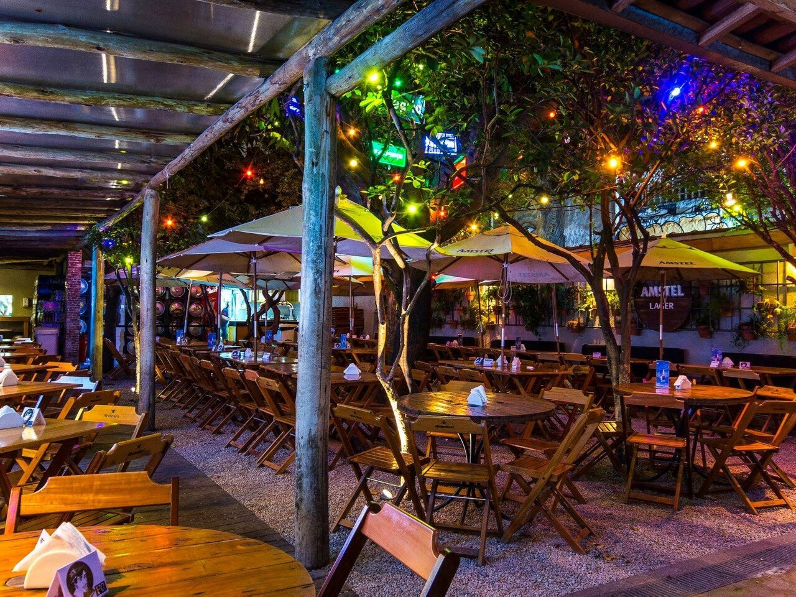
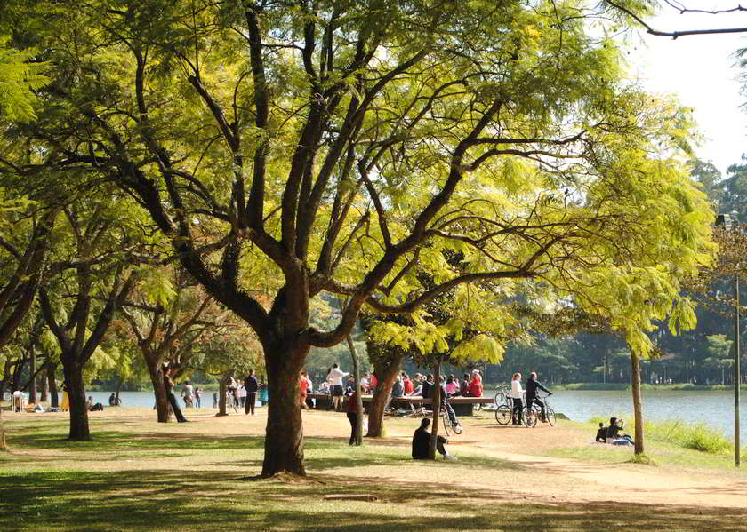

O que mais gosto em São Paulo
Passear na Avenida Paulista!

Um dos principais centros financeiros da cidade, a Avenida Paulista também possui diversas opções de entretenimento. Endereço do Museu de Arte Moderna de São Paulo, MASP, o Teatro Gazeta e muitos outros, a região é de fácil acesso graças as diversas linhas de ônibus que cruzam a avenida e a linhas do metrô que passa por baixo dela.
A Avenida Paulista sempre é assunto. O que será que estão falando a respeito no Google?
Os bares da Vila Madalena
Depois de uma dia de trabalho, nada melhor do que um bom chopp, um petisco e uma conversa em uma mesa de bar. Opções de sobra na região das ruas Aspicuelta Fradique Coutinho e Wisard.
Veja quais os melhores bares e restaurantes da região no Guia da Veja São Paulo
O Parque do Ibirapuera
Um dos cartões postais da cidade, o parque dispõe de mais de 1,5 km de área verde, lagos artificiais e pistas de cooper e ciclismo. E se isso não fosse suficiente, o parque costuma ser palco de diversos eventos culturais ao longo do ano.
Veja no mapa como chegar ao parque.
E existem muitos outros lugares interessantes na cidade...
- Mercado Municipal
- A Sala São Paulo
- Os estádio dos principais times de futebol da cidade
- Diversos museus, como o Memorial da América Latina, Museu da Língua Portuguesa e o Museu do Ipiranga
- E mais!